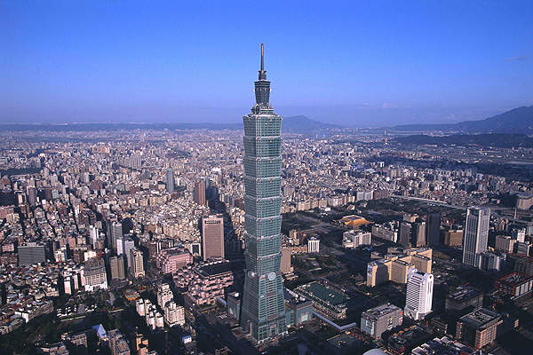
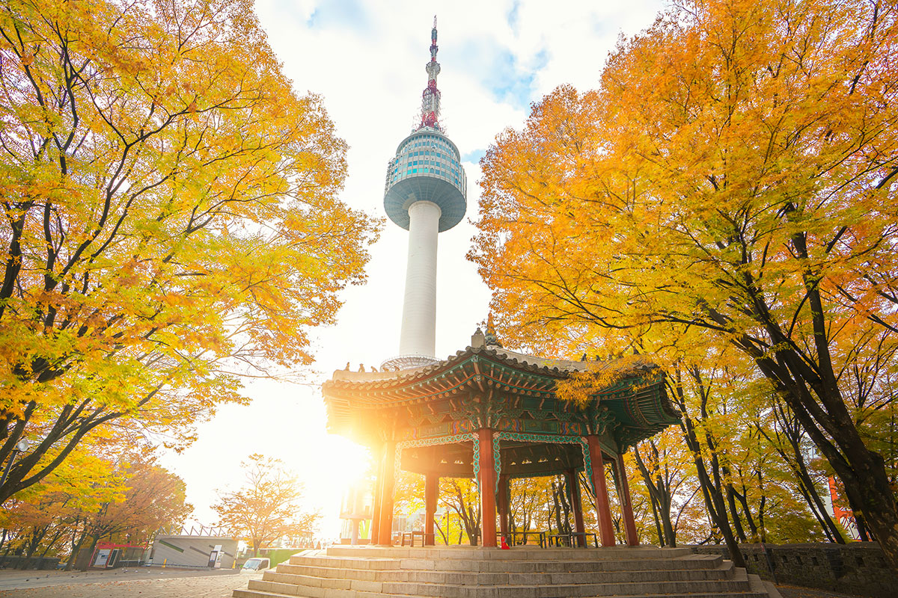

<!--
Developer:chien yun
Date: Oct 10 ,2019
Version:1.3
Description: first webpage of travel bird
  -->
<!DOCTYPE html>
<html lang="en" dir="ltr"/>
  <head>
    <meta charset="utf-8"/>
    <title>Travel Bird</title>
    <link rel="stylesheet" href="./css/style.css">
    <link rel="stylesheet" href="https://cdnjs.cloudflare.com/ajax/libs/font-awesome/4.7.0/css/font-awesome.min.css">
  </head>
  <body>
    <header>
      <ul>
      <li class="search-container">
        <form action="action_page.php">
        <input type="text" placeholder="Search.." name="search">
        <button type="submit"><i class="fa fa-search"></i></button>
        </form>
      </li>
      <li class="home">
        <a href="index.html">
        
        </a>
      </li>
      <li id="menu-flights">
        <a target=_block href="https://www.skyscanner.ca" class=menuhover>Flights</a></li>
      <li id="menu-hotels">
        <a target=_block href="https://www.agoda.com" class=menuhover>Hotels </a></li>
      <li id="menu-language"> Language
        <ul id="dropdown">
          <li><a href="#">English</a></li>
          <li><a href="#">French</a></li>
          <li><a href="#">Spanish</a></li>
          <li><a href="#">Chinese</a></li>
        </ul>
      </li>


      <ul>

    </header>
    <div class="introduction">
      <h3>Need inspiration for your next trip?</h3>
      <p>Explore unique experiences in Asia and South America. About flights, hotel, traffic, food, weather and culture. Help u to plan your vacation easy and fast. Make sure everyone has a wonderful trip.</p>

    </div>
    <div>
      <div class="columns ">
        <a href="taipei.html">
        
        </a>
        <p>Taipei, the capital of Taiwan, is a modern metropolis with Japanese colonial lanes, busy shopping streets and contemporary buildings. The skyline is crowned by the 509m-tall, bamboo-shaped Taipei 101 skyscraper, with upscale shops at the base and a rapid elevator to an observatory near the top. Taipei is also known for its lively street-food scene and many night markets, including expansive Shilin market.</p>
      </div>
      <div class="columns ">
        <a href="korea.html">
        
        </a>
        <p>South Korea, an East Asian nation on the southern half of the Korean Peninsula, shares one of the world’s most heavily militarized borders with North Korea. It’s equally known for its green, hilly countryside dotted with cherry trees and centuries-old Buddhist temples, plus its coastal fishing villages, sub-tropical islands and high-tech cities such as Seoul, the capital.</p>
      </div>
      <div class="columns ">
        <a href="Quito.html">
        </a>
        <p>Quito, Ecuador's capital, sits high in the Andean foothills at an altitude of 2,850m. Constructed on the foundations of an ancient Incan city, it’s known for its well-preserved colonial center, rich with 16th- and 17th-century churches and other structures blending European, Moorish and indigenous styles. These include the cathedral, in the Plaza Grande square, and ultra-ornate Compañia de Jesús Jesuit church.</p>
      </div>
    </div>
    <footer>
      <a href="contactform.html" id="contact">Contact Us</a>
      <a href="mailto:mikoyun@gmail.com.?Subject=Hello%20again"><i class="fa fa-envelope"></i></a>
      <a target=_block href="https://www.facebook.com/trivagoCA/" class="fa fa-facebook"></a>
      <a target=_block href="https://twitter.com/trivago" class="fa fa-twitter"></a>
      <div class="Copyright">
        Copyright 2019 travelbird | All rights reserved.
      </div>

    </footer>

  </body>
</html>
